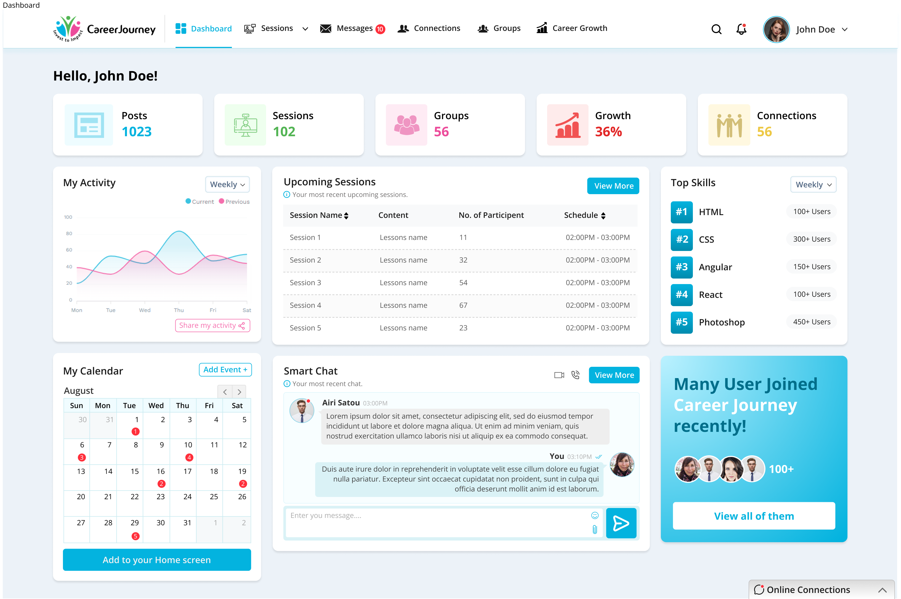
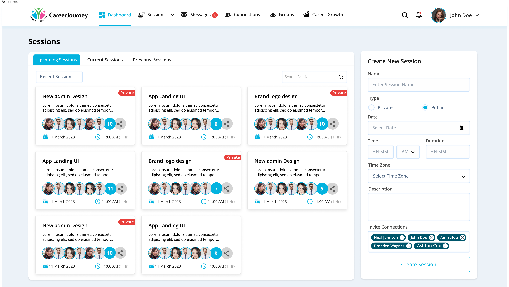
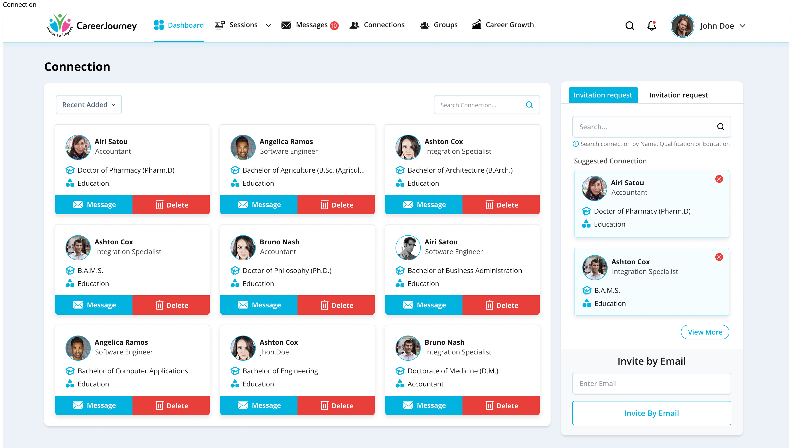
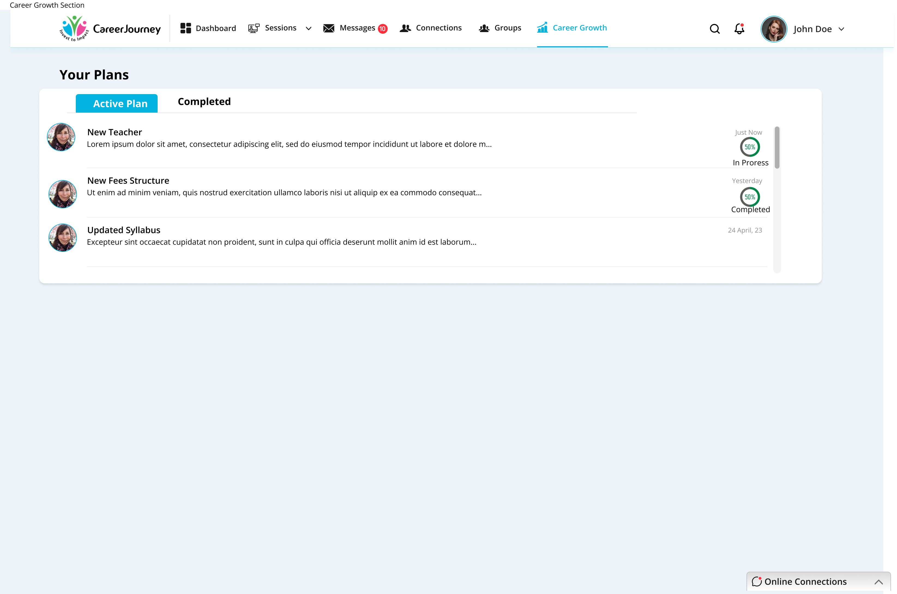

CareerJourney
0→1 Product DesignWeb AppAI FeaturesCareer TechFigma
"A full-featured career development platform built from scratch - giving professionals the tools, connections, and community they need to navigate one of life's most complex journeys."

end-to-end
tools integrated
concept to high-fidelity
01Overview
Project Type
0→1 Web Application Design - desktop-first, invitation-only platform
Organisation
Invest to Impact (ITOI) Network Foundation, USA. Non-profit. Invitation-only platform.
6 Core Modules
Dashboard · Sessions · Messages · Connections · Groups · Career Growth
Platform
Web application, desktop-first with responsive breakpoints
Designed the complete platform end-to-end - all 6 modules, every screen, full design system, navigation architecture, and all user interactions from onboarding to AI interview preparation. Every component, pattern, and interaction from a blank canvas to a complete high-fidelity product.
02Problem Statement
Professionals today face an overwhelming career landscape - unclear paths, limited access to mentors, no structured way to build meaningful connections, and zero personalised guidance. LinkedIn is too noisy. Career coaches are expensive. There's no single place that combines trusted networking, structured learning, AI career tools, and community - all designed specifically for professionals who need real support, not just job listings.
- No trusted space for professionals to connect based on shared career goals - not just job titles
- Career resources are scattered across LinkedIn, YouTube, and expensive coaching platforms
- Interview preparation is generic and not personalised to the job or industry
- Resume and cover letter creation is time-consuming and inconsistent
- Professionals have no structured way to host or join live learning sessions with peers
- No single dashboard giving professionals a clear view of their career progress and activity
03Product Vision
Three pillars that define what CareerJourney is built to deliver - and why each one matters.
Trusted Connections
Build a meaningful professional network filtered by education, role, and expertise. Suggested connections, mutual connections, invite by email - real relationships, not just followers.
AI Career Tools
AI Interview Prep personalised to job description and level. AI Resume Maker and AI Cover Letter Maker - create or upload, refined by AI for each application.
Structured Growth
Track ongoing skills progress, join public or private sessions, participate in groups, monitor career growth percentage - all visible from one dashboard.
04The 6 Modules
Dashboard
The command center of CareerJourney. At a glance, professionals see their Posts (1023), Sessions (102), Groups (56), Career Growth (36%), and Connections (56). A weekly activity chart tracks current vs previous performance. The calendar shows upcoming events. Smart Chat previews the latest message. Upcoming Sessions shows the next 5 scheduled sessions with participant counts and times. Top Skills shows the community's most in-demand skills - HTML (100+), CSS (300+), Angular (150+), React (100+), Photoshop (450+ users).
Career Growth
The personal development hub. Ongoing Skills shows progress bars for HTML, Management, C++, Java, and React - all tracked at 60% progress. Upcoming Lessons lists scheduled courses. Notice Board shows platform announcements. Three AI-powered tools sit below: AI Interview Preparation (select interview type, level, language, duration, and job description - then Start Your Interview), AI Resume Maker (create from scratch or upload existing), and AI Cover Letter Maker (create or upload). Every professional tool needed in one section.

Sessions
Professionals can create and join live learning sessions - public or private. The sessions grid shows session name, description, participant avatars with count, date (11 March 2023), and time (11:00 AM, 1 Hr). Sessions are tagged Private or Public. The Create New Session panel on the right allows setting name, type (Private/Public toggle), date, time, duration, timezone, description, and inviting connections. Session Detail shows the organiser, schedule, session type badge (PUBLIC/PRIVATE), full description, and a people list with Host and Co-Host role badges.


Video Session & AI Interview
A full video conferencing experience built into the platform. The main speaker is displayed large with their name label. A strip of participant thumbnails runs across the top showing all active participants with mic/camera status indicators. A live Messages panel on the right shows real-time chat with participant count (12 Participants). Controls at the bottom: Leave (red), Mute/Unmute, Camera toggle, and Raise Hand. The AI Interview Window uses the same layout but with an AI avatar (blue globe) as the interviewer, with a timer running at top (01:10:05) and interview Q&A in the right chat panel.


Connections
A 3-column grid of professional connections showing name, job title, education qualification, and sector. Each card has Message and Delete actions. Sortable by Recent Added. Search by name. Right sidebar shows Suggested Connections (searchable by Name, Qualification, or Education) and an Invite by Email field. Connection Detail page shows a full profile - photo, name, title, About section, education, and a Mutual Connections list showing shared professional network.


Groups & Messages
Groups allow professionals to create and join topic-based communities. Each group card shows name, description, member avatars with count, and creator. Create New Group panel: name, photo upload, description, and invite connections with tag-style chips. Messages is a full-featured inbox - conversation list on the left with avatar, name, preview, and timestamp. Active conversation on the right with message bubbles, timestamps, and video/call action buttons in the header.


05AI Features Deep Dive
CareerJourney doesn't bolt AI on as an afterthought - it's woven into the three moments that matter most in any professional's journey: getting the job, writing for the job, and preparing for the interview.
AI Interview Preparation
Select interview type, level, language, and duration. Paste the job description. The AI conducts a live video interview session with a timer, asking questions in real time. After the session, receive a detailed result page with Highlights and areas that Need to Improve, plus a downloadable interview report.
AI Resume Maker
Create a professional resume from scratch using AI, or upload your existing resume for AI to enhance and tailor to the role. Built directly into the Career Growth section - no third-party tool needed.
AI Cover Letter Maker
Generate a tailored cover letter for any job application, or upload an existing one for AI refinement. Paired with Resume Maker so both documents are consistent and ready together.
06Design Decisions
- Persistent top navigation with 6 clear modules - professionals always know where they are and where to go next (Jakob's Law + clear wayfinding)
- Dashboard as the daily home - one screen with everything a professional needs to start their day, no hunting required
- Right sidebar pattern used consistently across Sessions, Groups, and Connections for creation/action panels - reduces context switching
- Public/Private session badges - immediate visual distinction so users never accidentally join or create the wrong session type
- Participant avatars with count chips (e.g. "+10") - social proof and capacity at a glance across sessions and groups
- AI tools placed inside Career Growth, not as a separate module - they belong in the growth journey, not as isolated features
- Split-layout Messages - conversation list always visible, active chat takes the majority of space - familiar pattern from Slack/WhatsApp
- Profile structured in 3 columns: photo/name left, Personal Details center, Contact + Professional Details right - maximum scanability
- Plans section with circular progress indicators - visual progress motivates continued engagement
07Screens Showcase
All 13 primary screens - from the dashboard to AI interview results.



08Outcome
designed end-to-end
tools integrated
concept to high-fidelity
Impact
- Professionals have one trusted home for networking, learning, and career tools - no more switching between 5 different platforms
- AI Interview Preparation gives personalised practice with real feedback - Highlights and areas to improve downloadable after every session
- Sessions module enables structured peer learning - public and private, with host/co-host roles and participant management
- Connections go beyond following - education, role, and mutual connections visible at a glance for meaningful professional relationships
- Career Growth module tracks skill progress, upcoming lessons, and AI tools in one section - everything needed to grow, in one place
- Invitation-only model creates a trusted, high-quality professional community from day one
CareerJourney taught me how to design coherence across a large, multi-module platform. With 6 major sections and dozens of screens, the biggest challenge wasn't designing individual screens - it was making sure every module felt like part of the same product. I learned to build and enforce a design system early, use consistent layout patterns (like the right sidebar for creation actions), and always ask: does this interaction feel familiar, or am I making the user learn something new? Consistency is not a constraint - it is the product experience.
09Future Steps
-
01
Mobile app The platform is desktop-first; a mobile companion app for notifications, quick messages, and session joining would significantly increase daily engagement.
-
02
Mentor matching An algorithm that connects junior professionals with senior mentors based on career goals, industry, and skills.
-
03
Job board integration Surfacing relevant job opportunities inside the platform based on skills, connections, and career growth data.
-
04
Public profiles Allowing members to share a public-facing career profile link outside the invitation-only platform.
-
05
Analytics for session hosts Attendance rates, engagement scores, and participant feedback to help hosts improve their sessions over time.